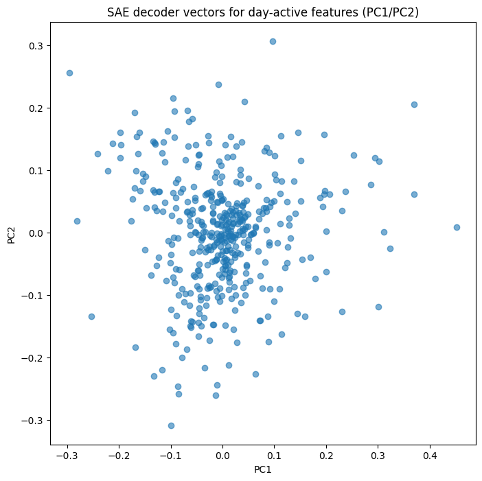
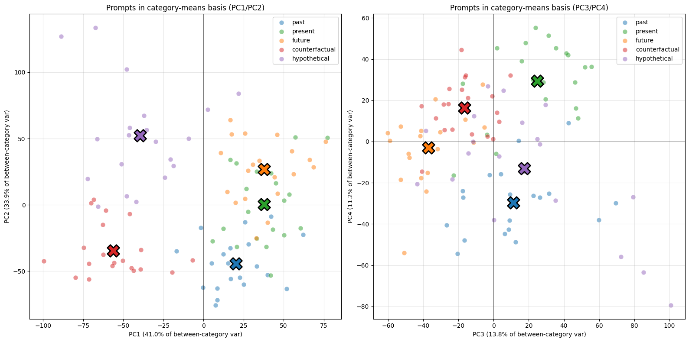

torch 2.10.0+cu128 | cuda 12.8 | device cudaGeometric structure of temporal concepts and the limits of sparse autoencoders decompostion.
Dilution of “time”: PCA vs SAE features in Gemma 2 2B
(details to be described).
Environment setup
Load model and SAE
Loaded pretrained model google/gemma-2-2b into HookedTransformer
n_layers=26, d_model=2304GPU allocated: 15.2GB / 15GB
SAE d_sae: 16384, d_in: 2304
{'d_in': 2304, 'd_sae': 16384, 'dtype': 'bfloat16', 'device': 'cuda', 'apply_b_dec_to_input': False, 'normalize_activations': 'none', 'reshape_activations': 'none', 'metadata': SAEMetadata({'sae_lens_version': '6.44.2', 'sae_lens_training_version': None, 'model_name': 'gemma-2-2b', 'hook_name': 'blocks.20.hook_resid_post', 'hook_head_index': None, 'prepend_bos': True, 'dataset_path': 'monology/pile-uncopyrighted', 'context_size': 1024, 'neuronpedia_id': 'gemma-2-2b/20-gemmascope-res-16k'})}Reproduction of days-of-weeksFrom paper:NOT ALL LANGUAGE MODEL FEATURES AREONE-DIMENSIONALLY LINEAR: https://arxiv.org/pdf/2405.14860(residual PCA at layer 15)

Variance explained: [0.37461206 0.25319353 0.132533 0.12052249]
Cumulative: [0.37461206 0.6278056 0.7603386 0.8808611 ]Encoding residuals ->feature activations
Days-of-wwek SAE decoder PCA
max act: 2040.0 | nonzero: 7208
max act: 2040.0 | nonzero: 7313
max act: 2040.0 | nonzero: 7231
max act: 2040.0 | nonzero: 7475
max act: 2040.0 | nonzero: 7314
max act: 2040.0 | nonzero: 7234
max act: 2040.0 | nonzero: 7276
max act: 2040.0 | nonzero: 7285
max act: 2040.0 | nonzero: 7203
max act: 2040.0 | nonzero: 7308
max act: 2040.0 | nonzero: 7222
max act: 2040.0 | nonzero: 7475
max act: 2040.0 | nonzero: 7310
max act: 2040.0 | nonzero: 7239
max act: 2040.0 | nonzero: 7274
max act: 2040.0 | nonzero: 7282
max act: 2040.0 | nonzero: 7210
max act: 2040.0 | nonzero: 7308
max act: 2040.0 | nonzero: 7225
max act: 2040.0 | nonzero: 7475
max act: 2040.0 | nonzero: 7310
max act: 2040.0 | nonzero: 7238
max act: 2040.0 | nonzero: 7271
max act: 2040.0 | nonzero: 7280
max act: 2040.0 | nonzero: 7202
max act: 2040.0 | nonzero: 7314
max act: 2040.0 | nonzero: 7229
max act: 2040.0 | nonzero: 7475
max act: 2040.0 | nonzero: 7313
max act: 2040.0 | nonzero: 7238
max act: 2040.0 | nonzero: 7268
max act: 2040.0 | nonzero: 7283
max act: 2040.0 | nonzero: 7218
max act: 2040.0 | nonzero: 7316
max act: 2040.0 | nonzero: 7234
max act: 2040.0 | nonzero: 7468
max act: 2040.0 | nonzero: 7309
max act: 2040.0 | nonzero: 7233
max act: 2040.0 | nonzero: 7274
max act: 2040.0 | nonzero: 7284
max act: 2040.0 | nonzero: 7193
max act: 2040.0 | nonzero: 7307
max act: 2040.0 | nonzero: 7219
max act: 2040.0 | nonzero: 7470
max act: 2040.0 | nonzero: 7310
max act: 2040.0 | nonzero: 7233
max act: 2040.0 | nonzero: 7268
max act: 2040.0 | nonzero: 7276
max act: 2040.0 | nonzero: 7211
max act: 2040.0 | nonzero: 7312
max act: 2040.0 | nonzero: 7232
max act: 2040.0 | nonzero: 7470
max act: 2040.0 | nonzero: 7311
max act: 2040.0 | nonzero: 7235
max act: 2040.0 | nonzero: 7280
max act: 2040.0 | nonzero: 7281
Found 429 candidate features active on day prompts
Load temporal prompts: past, present, future, counterfactual and hypotheticalFrom Kaggle’s imported dataset
Geometry at 8, 14, 20, 25 layers
Layer 8 done
Layer 14 done
Layer 20 done
Layer 25 done
Temporal category means at layer 20
max act: 2040.0 | nonzero: 7539
max act: 2040.0 | nonzero: 7409
max act: 2040.0 | nonzero: 7524
max act: 2040.0 | nonzero: 7504
max act: 2040.0 | nonzero: 7503
max act: 2040.0 | nonzero: 7528
max act: 2040.0 | nonzero: 7508
max act: 2040.0 | nonzero: 7520
max act: 2040.0 | nonzero: 7691
max act: 2040.0 | nonzero: 7531
max act: 2040.0 | nonzero: 7645
max act: 2040.0 | nonzero: 7846
max act: 2040.0 | nonzero: 7893
max act: 2040.0 | nonzero: 7535
max act: 2040.0 | nonzero: 7723
max act: 2040.0 | nonzero: 7597
max act: 2040.0 | nonzero: 7454
max act: 2040.0 | nonzero: 7613
max act: 2040.0 | nonzero: 7564
max act: 2040.0 | nonzero: 7724
past: 20 prompts processed
max act: 2040.0 | nonzero: 7547
max act: 2040.0 | nonzero: 7494
max act: 2040.0 | nonzero: 7498
max act: 2040.0 | nonzero: 7586
max act: 2040.0 | nonzero: 7653
max act: 2040.0 | nonzero: 7507
max act: 2040.0 | nonzero: 7781
max act: 2040.0 | nonzero: 7417
max act: 2040.0 | nonzero: 7550
max act: 2040.0 | nonzero: 7392
max act: 2040.0 | nonzero: 7493
max act: 2040.0 | nonzero: 7570
max act: 2040.0 | nonzero: 7713
max act: 2040.0 | nonzero: 7620
max act: 2040.0 | nonzero: 7567
max act: 2040.0 | nonzero: 7579
max act: 2040.0 | nonzero: 7456
max act: 2040.0 | nonzero: 7476
max act: 2040.0 | nonzero: 7780
max act: 2040.0 | nonzero: 7566
present: 20 prompts processed
max act: 2040.0 | nonzero: 7641
max act: 2040.0 | nonzero: 7522
max act: 2040.0 | nonzero: 7558
max act: 2040.0 | nonzero: 7594
max act: 2040.0 | nonzero: 7581
max act: 2040.0 | nonzero: 7584
max act: 2040.0 | nonzero: 7663
max act: 2040.0 | nonzero: 7790
max act: 2040.0 | nonzero: 7721
max act: 2040.0 | nonzero: 7666
max act: 2040.0 | nonzero: 7563
max act: 2040.0 | nonzero: 7727
max act: 2040.0 | nonzero: 7591
max act: 2040.0 | nonzero: 7613
max act: 2040.0 | nonzero: 7546
max act: 2040.0 | nonzero: 7372
max act: 2040.0 | nonzero: 7408
max act: 2040.0 | nonzero: 7619
max act: 2040.0 | nonzero: 7618
max act: 2040.0 | nonzero: 7609
future: 20 prompts processed
max act: 2040.0 | nonzero: 7935
max act: 2040.0 | nonzero: 8004
max act: 2040.0 | nonzero: 8128
max act: 2040.0 | nonzero: 8183
max act: 2040.0 | nonzero: 7943
max act: 2040.0 | nonzero: 8124
max act: 2040.0 | nonzero: 8238
max act: 2040.0 | nonzero: 8123
max act: 2040.0 | nonzero: 8023
max act: 2040.0 | nonzero: 7977
max act: 2040.0 | nonzero: 7697
max act: 2040.0 | nonzero: 7868
max act: 2040.0 | nonzero: 7912
max act: 2040.0 | nonzero: 7928
max act: 2040.0 | nonzero: 7986
max act: 2040.0 | nonzero: 7992
max act: 2040.0 | nonzero: 7873
max act: 2040.0 | nonzero: 7783
max act: 2040.0 | nonzero: 7685
max act: 2040.0 | nonzero: 7886
counterfactual: 20 prompts processed
max act: 2040.0 | nonzero: 7829
max act: 2040.0 | nonzero: 7854
max act: 2040.0 | nonzero: 8083
max act: 2040.0 | nonzero: 7973
max act: 2040.0 | nonzero: 7870
max act: 2040.0 | nonzero: 7886
max act: 2040.0 | nonzero: 7926
max act: 2040.0 | nonzero: 7876
max act: 2040.0 | nonzero: 8087
max act: 2040.0 | nonzero: 7886
max act: 2040.0 | nonzero: 7775
max act: 2040.0 | nonzero: 7857
max act: 2040.0 | nonzero: 7934
max act: 2040.0 | nonzero: 8015
max act: 2040.0 | nonzero: 8054
max act: 2040.0 | nonzero: 8279
max act: 2040.0 | nonzero: 7804
max act: 2040.0 | nonzero: 7836
max act: 2040.0 | nonzero: 7734
max act: 2040.0 | nonzero: 7958
hypothetical: 20 prompts processed
max act: 2040.0 | nonzero: 8065
max act: 2040.0 | nonzero: 7430
max act: 2040.0 | nonzero: 7641
max act: 2040.0 | nonzero: 7597
max act: 2040.0 | nonzero: 7673
max act: 2040.0 | nonzero: 7861
max act: 2040.0 | nonzero: 7523
max act: 2040.0 | nonzero: 7679
max act: 2040.0 | nonzero: 8263
max act: 2040.0 | nonzero: 7745
max act: 2040.0 | nonzero: 7456
max act: 2040.0 | nonzero: 7660
max act: 2040.0 | nonzero: 7432
max act: 2040.0 | nonzero: 7689
max act: 2040.0 | nonzero: 7903
max act: 2040.0 | nonzero: 7417
max act: 2040.0 | nonzero: 7797
max act: 2040.0 | nonzero: 7889
max act: 2040.0 | nonzero: 7673
max act: 2040.0 | nonzero: 7594
neutral: 20 prompts processedtop differential features per category
=== PAST ===
feature_id diff_score past_mean neutral_mean neuronpedia
1858 24.0000 64.0000 40.000000 https://neuronpedia.org/gemma-2-2b/20-gemmascope-res-16k/1858
2230 16.2500 16.2500 0.000000 https://neuronpedia.org/gemma-2-2b/20-gemmascope-res-16k/2230
1548 15.5625 15.5625 0.000000 https://neuronpedia.org/gemma-2-2b/20-gemmascope-res-16k/1548
2914 14.8125 16.1250 1.289062 https://neuronpedia.org/gemma-2-2b/20-gemmascope-res-16k/2914
12545 14.1875 14.1875 0.000000 https://neuronpedia.org/gemma-2-2b/20-gemmascope-res-16k/12545
6631 13.7500 52.2500 38.500000 https://neuronpedia.org/gemma-2-2b/20-gemmascope-res-16k/6631
2229 13.0000 64.5000 51.500000 https://neuronpedia.org/gemma-2-2b/20-gemmascope-res-16k/2229
2238 12.8125 26.0000 13.187500 https://neuronpedia.org/gemma-2-2b/20-gemmascope-res-16k/2238
15383 11.5000 11.5000 0.000000 https://neuronpedia.org/gemma-2-2b/20-gemmascope-res-16k/15383
5571 11.3750 12.1875 0.789062 https://neuronpedia.org/gemma-2-2b/20-gemmascope-res-16k/5571
5890 11.0000 11.5000 0.474609 https://neuronpedia.org/gemma-2-2b/20-gemmascope-res-16k/5890
1306 10.5000 10.5000 0.000000 https://neuronpedia.org/gemma-2-2b/20-gemmascope-res-16k/1306
12265 9.6250 12.5000 2.859375 https://neuronpedia.org/gemma-2-2b/20-gemmascope-res-16k/12265
7116 9.5000 9.5000 0.000000 https://neuronpedia.org/gemma-2-2b/20-gemmascope-res-16k/7116
10377 9.4375 9.4375 0.000000 https://neuronpedia.org/gemma-2-2b/20-gemmascope-res-16k/10377
=== PRESENT ===
feature_id diff_score present_mean neutral_mean neuronpedia
1858 19.25000 59.25000 40.000000 https://neuronpedia.org/gemma-2-2b/20-gemmascope-res-16k/1858
6631 15.00000 53.50000 38.500000 https://neuronpedia.org/gemma-2-2b/20-gemmascope-res-16k/6631
2230 14.31250 14.31250 0.000000 https://neuronpedia.org/gemma-2-2b/20-gemmascope-res-16k/2230
2914 13.75000 15.06250 1.289062 https://neuronpedia.org/gemma-2-2b/20-gemmascope-res-16k/2914
12545 12.75000 12.75000 0.000000 https://neuronpedia.org/gemma-2-2b/20-gemmascope-res-16k/12545
2489 12.43750 12.43750 0.000000 https://neuronpedia.org/gemma-2-2b/20-gemmascope-res-16k/2489
2238 12.18750 25.37500 13.187500 https://neuronpedia.org/gemma-2-2b/20-gemmascope-res-16k/2238
7116 11.62500 11.62500 0.000000 https://neuronpedia.org/gemma-2-2b/20-gemmascope-res-16k/7116
2229 11.50000 63.00000 51.500000 https://neuronpedia.org/gemma-2-2b/20-gemmascope-res-16k/2229
12265 11.00000 13.87500 2.859375 https://neuronpedia.org/gemma-2-2b/20-gemmascope-res-16k/12265
5890 9.75000 10.25000 0.474609 https://neuronpedia.org/gemma-2-2b/20-gemmascope-res-16k/5890
3971 8.87500 14.25000 5.375000 https://neuronpedia.org/gemma-2-2b/20-gemmascope-res-16k/3971
9768 8.75000 44.00000 35.250000 https://neuronpedia.org/gemma-2-2b/20-gemmascope-res-16k/9768
15383 8.68750 8.68750 0.000000 https://neuronpedia.org/gemma-2-2b/20-gemmascope-res-16k/15383
4373 7.59375 7.59375 0.000000 https://neuronpedia.org/gemma-2-2b/20-gemmascope-res-16k/4373
=== FUTURE ===
feature_id diff_score future_mean neutral_mean neuronpedia
16148 17.5000 17.5000 0.000000 https://neuronpedia.org/gemma-2-2b/20-gemmascope-res-16k/16148
2230 16.3750 16.3750 0.000000 https://neuronpedia.org/gemma-2-2b/20-gemmascope-res-16k/2230
6631 15.7500 54.2500 38.500000 https://neuronpedia.org/gemma-2-2b/20-gemmascope-res-16k/6631
2229 14.5000 66.0000 51.500000 https://neuronpedia.org/gemma-2-2b/20-gemmascope-res-16k/2229
1858 13.0000 53.0000 40.000000 https://neuronpedia.org/gemma-2-2b/20-gemmascope-res-16k/1858
9520 12.3750 12.3750 0.000000 https://neuronpedia.org/gemma-2-2b/20-gemmascope-res-16k/9520
7569 12.1250 12.1250 0.000000 https://neuronpedia.org/gemma-2-2b/20-gemmascope-res-16k/7569
1322 12.0000 12.4375 0.421875 https://neuronpedia.org/gemma-2-2b/20-gemmascope-res-16k/1322
2238 11.9375 25.1250 13.187500 https://neuronpedia.org/gemma-2-2b/20-gemmascope-res-16k/2238
12265 11.8750 14.7500 2.859375 https://neuronpedia.org/gemma-2-2b/20-gemmascope-res-16k/12265
12545 11.5625 11.5625 0.000000 https://neuronpedia.org/gemma-2-2b/20-gemmascope-res-16k/12545
5890 11.1250 11.6250 0.474609 https://neuronpedia.org/gemma-2-2b/20-gemmascope-res-16k/5890
1630 8.6250 8.6250 0.000000 https://neuronpedia.org/gemma-2-2b/20-gemmascope-res-16k/1630
7116 8.4375 8.4375 0.000000 https://neuronpedia.org/gemma-2-2b/20-gemmascope-res-16k/7116
12341 8.2500 8.7500 0.519531 https://neuronpedia.org/gemma-2-2b/20-gemmascope-res-16k/12341
=== COUNTERFACTUAL ===
feature_id diff_score counterfactual_mean neutral_mean neuronpedia
1858 29.0000 69.0000 40.000000 https://neuronpedia.org/gemma-2-2b/20-gemmascope-res-16k/1858
15383 19.0000 19.0000 0.000000 https://neuronpedia.org/gemma-2-2b/20-gemmascope-res-16k/15383
5571 18.8750 19.6250 0.789062 https://neuronpedia.org/gemma-2-2b/20-gemmascope-res-16k/5571
2238 17.2500 30.5000 13.187500 https://neuronpedia.org/gemma-2-2b/20-gemmascope-res-16k/2238
14267 17.0000 17.0000 0.000000 https://neuronpedia.org/gemma-2-2b/20-gemmascope-res-16k/14267
12545 16.2500 16.2500 0.000000 https://neuronpedia.org/gemma-2-2b/20-gemmascope-res-16k/12545
2230 14.1250 14.1250 0.000000 https://neuronpedia.org/gemma-2-2b/20-gemmascope-res-16k/2230
9909 13.7500 22.0000 8.250000 https://neuronpedia.org/gemma-2-2b/20-gemmascope-res-16k/9909
5890 13.3125 13.8125 0.474609 https://neuronpedia.org/gemma-2-2b/20-gemmascope-res-16k/5890
9070 12.5625 12.5625 0.000000 https://neuronpedia.org/gemma-2-2b/20-gemmascope-res-16k/9070
12265 11.6250 14.5000 2.859375 https://neuronpedia.org/gemma-2-2b/20-gemmascope-res-16k/12265
9492 11.1250 11.1250 0.000000 https://neuronpedia.org/gemma-2-2b/20-gemmascope-res-16k/9492
1720 11.0625 11.5000 0.437500 https://neuronpedia.org/gemma-2-2b/20-gemmascope-res-16k/1720
5371 11.0625 11.8750 0.828125 https://neuronpedia.org/gemma-2-2b/20-gemmascope-res-16k/5371
7116 10.1875 10.1875 0.000000 https://neuronpedia.org/gemma-2-2b/20-gemmascope-res-16k/7116
=== HYPOTHETICAL ===
feature_id diff_score hypothetical_mean neutral_mean neuronpedia
1858 18.25000 58.25000 40.000000 https://neuronpedia.org/gemma-2-2b/20-gemmascope-res-16k/1858
1720 16.75000 17.12500 0.437500 https://neuronpedia.org/gemma-2-2b/20-gemmascope-res-16k/1720
2238 13.68750 26.87500 13.187500 https://neuronpedia.org/gemma-2-2b/20-gemmascope-res-16k/2238
5890 10.25000 10.75000 0.474609 https://neuronpedia.org/gemma-2-2b/20-gemmascope-res-16k/5890
5571 10.25000 11.06250 0.789062 https://neuronpedia.org/gemma-2-2b/20-gemmascope-res-16k/5571
2230 9.31250 9.31250 0.000000 https://neuronpedia.org/gemma-2-2b/20-gemmascope-res-16k/2230
15383 7.90625 7.90625 0.000000 https://neuronpedia.org/gemma-2-2b/20-gemmascope-res-16k/15383
16148 7.56250 7.56250 0.000000 https://neuronpedia.org/gemma-2-2b/20-gemmascope-res-16k/16148
12265 7.00000 9.87500 2.859375 https://neuronpedia.org/gemma-2-2b/20-gemmascope-res-16k/12265
14041 6.81250 7.31250 0.507812 https://neuronpedia.org/gemma-2-2b/20-gemmascope-res-16k/14041
9635 6.68750 6.68750 0.000000 https://neuronpedia.org/gemma-2-2b/20-gemmascope-res-16k/9635
9070 6.25000 6.25000 0.000000 https://neuronpedia.org/gemma-2-2b/20-gemmascope-res-16k/9070
1548 6.18750 6.18750 0.000000 https://neuronpedia.org/gemma-2-2b/20-gemmascope-res-16k/1548
2956 5.93750 6.31250 0.373047 https://neuronpedia.org/gemma-2-2b/20-gemmascope-res-16k/2956
12545 5.90625 5.90625 0.000000 https://neuronpedia.org/gemma-2-2b/20-gemmascope-res-16k/12545temporal geometry PCA

Variance explained: [0.4102727 0.33915818 0.13833533 0.11223382]
Cumulative: [0.4102727 0.7494309 0.88776624 1. ]Pre-prompt scatter
past: done
present: done
future: done
counterfactual: done
hypothetical: done
Silhouette score in PC1-2: -0.119
Silhouette score in PC1-4: 0.010
Interpretation: > 0.25 = clear cluster structure, 0.1-0.25 = weak structure, < 0.1 = mostly overlapping
Silhouette in means-basis (PC1-2): 0.196
Silhouette in means-basis (PC1-4): 0.310:::